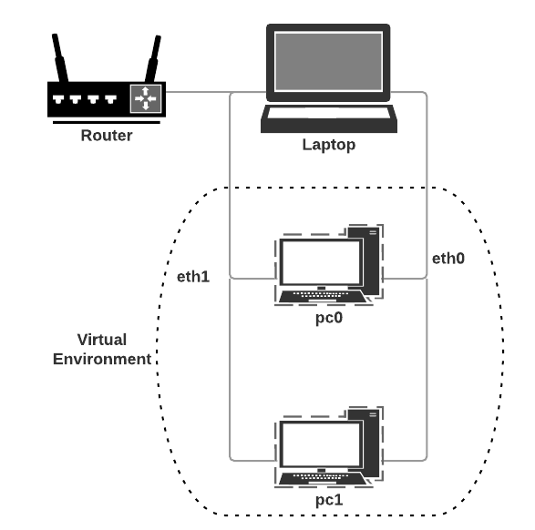
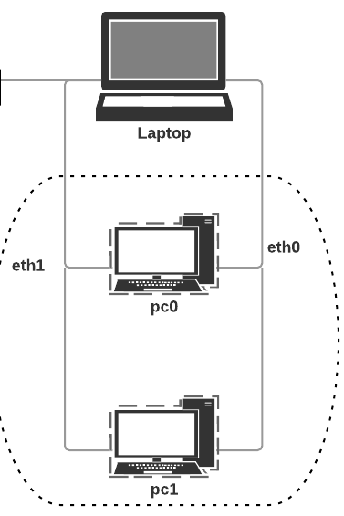
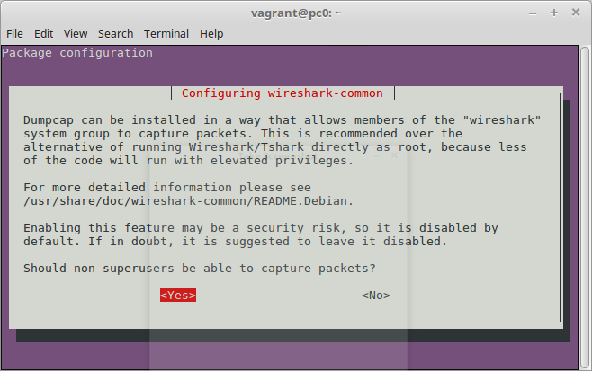
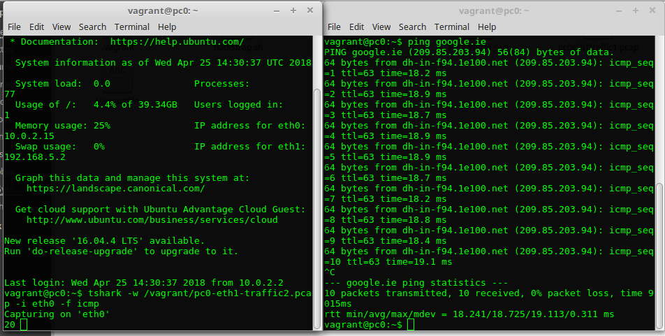
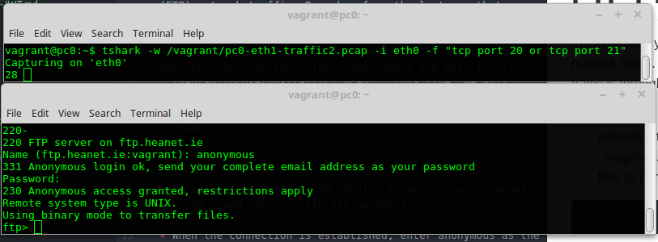
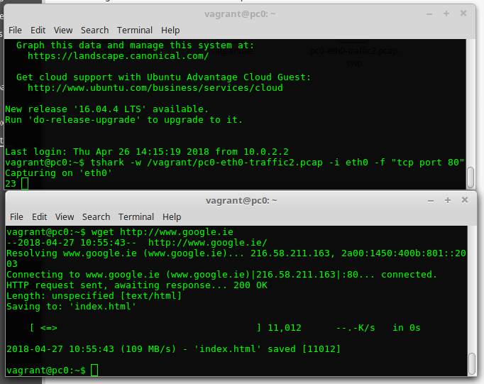

Network Traffic Monitoring and Analysis
Use TShark to capture and analyse network traffic.
Objectives

Wireshark is a software protocol analyzer, or "packet sniffer" application, used for network troubleshooting, analysis, software and protocol development, and education. In this lab, you will:
- Capture and Analyse Local ICMP Data using Wireshark
- Start and stop data capture of ping traffic to local hosts.
- Locate the IP and MAC address information in captured PDUs.
- Capture and Analyze Remote ICMP Data in Wireshark.
- Start and stop data capture of ping traffic to remote hosts.
- Locate the IP and MAC address information in captured PDUs.
- Explain why MAC addresses for remote hosts are different than the MAC addresses of local hosts.
Required Resources
- Computer with Internet Access
- Vagrant
- VirtualBox
- Complete last week2 lab - Vagrant and Virtualisation
Set up Virtual Network
- Create a lab directory called cs-nets-lab3.
- Open a terminal window in the directory and run
vagrant initto initialise it as a vagrant project - Replace the contents of the Vagrantfile with the following code:
VAGRANTFILE_API_VERSION = "2"
Vagrant.configure(VAGRANTFILE_API_VERSION) do |config|
config.vm.define "pc0" do |pc0|
pc0.vm.hostname = "pc0"
pc0.vm.network :private_network, ip: "192.168.5.2"
end
config.vm.define "pc1" do |pc1|
pc1.vm.hostname = "pc1"
pc1.vm.network :private_network, ip: "192.168.5.3"
end
config.vm.box = "frankwalsh/labvm"
config.ssh.forward_x11 = true
end- Start the virtual environment in the usual way:
The Vagrantfile will create the following network topology consisting of two linux machines connected using a private network (192.168.5.0, mask 255.255.255.0).$ vagrant up

- Check if you can "see" the new VMs from your host. From your host, Ping both using the IP addresses you assigned to them in your Vagrantfile.
``` ping 192.168.5.2
ping 192.168.5.3 ``` Both should respond successfully.
You will now send and monitor network traffic between pc0, pc1 and the host machine.
Capture and Analyse Local ICMP Data in Wireshark
You will now ping another PC on the private network and capture ICMP requests and replies in tshark. You will also look inside the frames captured for specific information. This analysis should help to clarify how packet headers are used to transport data to their destination.
Retrieve your PC’s interface configuration
You will need to record your host machines IP address and its network interface card (NIC) physical address, also called the MAC address.
- On the host machine, open a command window, type
ipconfig /all, and then press Enter. If you are using Linux/Windows, typeifconfig, and then press enter. - Note your PC interface’s IP address and MAC (physical) address. The output should look similar, but not exactly like , the following:
$ ifconfig
eno1 Link encap:Ethernet HWaddr 34:e6:d7:06:ef:6f
inet addr:10.7.10.119 Bcast:10.7.10.255 Mask:255.255.255.0
inet6 addr: 2001:770:20:4170:6007:1aee:c8c5:fa34/64 Scope:Global
inet6 addr: 2001:770:20:4170:5a4:59da:ea78:af39/64 Scope:Global
inet6 addr: fe80::3e41:4078:8c63:11b3/64 Scope:Link
inet6 addr: 2001:770:20:4170:202a:4ab8:e8ab:c269/128 Scope:Global
UP BROADCAST RUNNING MULTICAST MTU:1500 Metric:1
RX packets:2210075 errors:0 dropped:0 overruns:0 frame:0
TX packets:1114716 errors:0 dropped:0 overruns:0 carrier:0
collisions:0 txqueuelen:1000
RX bytes:3081845821 (3.0 GB) TX bytes:99193430 (99.1 MB)
Interrupt:20 Memory:f7400000-f7420000
lo Link encap:Local Loopback
inet addr:127.0.0.1 Mask:255.0.0.0
inet6 addr: ::1/128 Scope:Host
UP LOOPBACK RUNNING MTU:65536 Metric:1
RX packets:70395 errors:0 dropped:0 overruns:0 frame:0
TX packets:70395 errors:0 dropped:0 overruns:0 carrier:0
collisions:0 txqueuelen:1000
RX bytes:9231548 (9.2 MB) TX bytes:9231548 (9.2 MB)
vboxnet0 Link encap:Ethernet HWaddr 0a:00:27:00:00:00
inet addr:192.168.5.1 Bcast:192.168.5.255 Mask:255.255.255.0
inet6 addr: fe80::800:27ff:fe00:0/64 Scope:Link
UP BROADCAST RUNNING MULTICAST MTU:1500 Metric:1
RX packets:0 errors:0 dropped:0 overruns:0 frame:0
TX packets:975 errors:0 dropped:0 overruns:0 carrier:0
collisions:0 txqueuelen:1000
RX bytes:0 (0.0 B) TX bytes:162768 (162.7 KB)SSH in to pc0 and start using TShark
- In a terminal window open in the vagrant project directory(cs-nets-lab3), open a SSH session with pc0 using the following command:
vagrant ssh pc0 - Have a look at the network configuration and take note the name of the various inteface adapters:
vagrant@pc0:~$ ifconfig eth0 Link encap:Ethernet HWaddr 08:00:27:1b:25:c4 inet addr:10.0.2.15 Bcast:10.0.2.255 Mask:255.255.255.0 inet6 addr: fe80::a00:27ff:fe1b:25c4/64 Scope:Link UP BROADCAST RUNNING MULTICAST MTU:1500 Metric:1 RX packets:647 errors:0 dropped:0 overruns:0 frame:0 TX packets:547 errors:0 dropped:0 overruns:0 carrier:0 collisions:0 txqueuelen:1000 RX bytes:71816 (71.8 KB) TX bytes:63132 (63.1 KB) eth1 Link encap:Ethernet HWaddr 08:00:27:bb:e7:ef inet addr:192.168.5.2 Bcast:192.168.5.255 Mask:255.255.255.0 inet6 addr: fe80::a00:27ff:febb:e7ef/64 Scope:Link UP BROADCAST RUNNING MULTICAST MTU:1500 Metric:1 RX packets:17 errors:0 dropped:0 overruns:0 frame:0 TX packets:13 errors:0 dropped:0 overruns:0 carrier:0 collisions:0 txqueuelen:1000 RX bytes:3169 (3.1 KB) TX bytes:1062 (1.0 KB) - We will use tshark to start monitoring network traffic on interface eth1 on pc0. The eth1 interface connects pc0 to the private network on the host machine(see the diagram on page 1).Initially we will view the results in the console. First we need to configure tshark to allow access to the network interfaces and to /usr/bin/dumpcap for logging. In the pc0 ssh session do the following:
Enter the following command:
sudo dpkg-reconfigure wireshark-commonand select "yes" in the dialog window:

Modify the permissions on /usr/bin/dumpcap as follows:
vagrant@pc0:~$ sudo chmod +x /usr/bin/dumpcapEnter the following command to capture the next 10 packets on interface eth1 and print it to the console.
tshark -i eth1 -c 10
Capturing on 'eth1'You will probably start to see traffic immediately. We can apply a filter to make it easier to view and work with the data that is being captured by tshark. For now, we are only interested in displaying ICMP (ping) PDUs. This time, you will configure tshark will output results to /vagrant/pc0-eth1-traffic1.log.
Capture Filters
Sometimes, particularly on busy networks, Capture filters are applied during data capturing in order to discard network traffic that you're not interested in. This can be done using the -f (filter) command-line parameter, followed by a filter criteria.
There are many filters you can apply. In this case we are just interested in ICPM traffic.
Remember that filter strings always should be written in lowercase.
4. Stop TShark if it's still capturing traffic by entering ctrl+c in the ssh terminal. Now enter the following:
vagrant@pc0:~$ tshark -i eth1 -f icmp- Now bring up a command prompt window on your host machine and ping the IP address of pc0 .
$ ping 192.168.5.2 PING 192.168.5.2 (192.168.5.2) 56(84) bytes of data. 64 bytes from 192.168.5.2: icmp_seq=1 ttl=64 time=0.543 ms 64 bytes from 192.168.5.2: icmp_seq=2 ttl=64 time=0.445 ms 64 bytes from 192.168.5.2: icmp_seq=3 ttl=64 time=0.339 ms 64 bytes from 192.168.5.2: icmp_seq=4 ttl=64 time=0.336 ms After the ping has executed for a while, you should see the ICMP traffic similar to the following:
1 0.000000 192.168.5.1 -> 192.168.5.2 ICMP 98 Echo (ping) request id=0x5dc4, seq=1/256, ttl=64 2 0.000061 192.168.5.2 -> 192.168.5.1 ICMP 98 Echo (ping) reply id=0x5dc4, seq=1/256, ttl=64 (request in 1) 3 1.011293 192.168.5.1 -> 192.168.5.2 ICMP 98 Echo (ping) request id=0x5dc4, seq=2/512, ttl=64 4 1.011348 192.168.5.2 -> 192.168.5.1 ICMP 98 Echo (ping) reply id=0x5dc4, seq=2/512, ttl=64 (request in 3) 5 2.035378 192.168.5.1 -> 192.168.5.2 ICMP 98 Echo (ping) request id=0x5dc4, seq=3/768, ttl=64 6 2.035403 192.168.5.2 -> 192.168.5.1 ICMP 98 Echo (ping) reply id=0x5dc4, seq=3/768, ttl=64 (request in 5) 7 3.059853 192.168.5.1 -> 192.168.5.2 ICMP 98 Echo (ping) request id=0x5dc4, seq=4/1024, ttl=64 8 3.059878 192.168.5.2 -> 192.168.5.1 ICMP 98 Echo (ping) reply id=0x5dc4, seq=4/1024, ttl=64 (request in 7) 9 4.087767 192.168.5.1 -> 192.168.5.2 ICMP 98 Echo (ping) request id=0x5dc4, seq=5/1280, ttl=64 10 4.087801 192.168.5.2 -> 192.168.5.1 ICMP 98 Echo (ping) reply id=0x5dc4, seq=5/1280, ttl=64 (request in 9) 11 5.112781 192.168.5.1 -> 192.168.5.2 ICMP 98 Echo (ping) request id=0x5dc4, seq=6/1536, ttl=64 12 5.112833 192.168.5.2 -> 192.168.5.1 ICMP 98 Echo (ping) reply id=0x5dc4, seq=6/1536, ttl=64 (request in 11) 13 6.132123 192.168.5.1 -> 192.168.5.2 ICMP 98 Echo (ping) request id=0x5dc4, seq=7/1792, ttl=64 14 6.132146 192.168.5.2 -> 192.168.5.1 ICMP 98 Echo (ping) reply id=0x5dc4, seq=7/1792, ttl=64 (request in 13) 15 7.157211 192.168.5.1 -> 192.168.5.2 ICMP 98 Echo (ping) request id=0x5dc4, seq=8/2048, ttl=64 16 7.157264 192.168.5.2 -> 192.168.5.1 ICMP 98 Echo (ping) reply id=0x5dc4, seq=8/2048, ttl=64 (request in 15)Note: If your pings fail, this may be because your host firewall is blocking the requests. If this happens, try pinging pc0 from pc1.
Now, if need be, stop TShark capturing traffic by entering
ctrl+cin the SSH session.
Display filters.
Display filters are applied after packet capturing and just "hide" network traffic fields you are not interested in and display the ones you are interested in. Display filters are specified using the -T command line parameter followed by the fields you wish to display. You can use them to "query" your network data. For example, you might want to see packets sent to your machine from a particular IP address. You always can remove the effects of a display filter and get all your data back.
You will now examine the data that was generated by the ping requests from the host machine. Tshark can produce data in a standard format (called pcap) so that it can be analysed later. As well as capturing network data, tshark can also be used to analyse pcap files.
The previous section displayed the list of PDU frames captured as a summary of the IP packet information. We now want to investigate the various PDU layers and analyse the values.
Record Network traffic in a pcap file.
You will now record 10 icmp packets on eth1 interface, and write the results to file /vagrant/pc0-eth1-traffic1.pcap
- In the ssh session for pc0, enter the following command to capture up to 10 frames and write them (-w paramater) to /vagrant/pc0-eth1-traffic1.pcap.
vagrant@pc0:~$ tshark -i eth1 -f icmp -c 10 -w /vagrant/pc0-eth1-traffic1.pcap
Capturing on 'eth1'And, as before, ping pc0 from the host machine. TShark will record next 10 ICMP frames.
We will now use /vagrant/pc0-eth1-traffic1.pcap to analyse the data at different levels
IP information
The above console listing in the previous section gives a summary of the IPv4 PDU. You can easily see the soucrce and destination ipv4 addresses which correspond to what we expect (192.168.5.1 is the host, 192.168.5.2 is pc0). We will now use the pcap file to display ip summary:
tshark -r /vagrant/pc0-eth1-traffic1.pcapThis instructs tshark to read /vagrant/pc0-eth1-traffic1.pcap and output the result to the console. But what if we want to see just the Ethernet PDU information? This is also recorded in the pcap file, we just need to tell tshark to display it.
Ethernet PDU
To get information relating to Ethernet PDUs for each packet, run the following command:
vagrant@pc0:~$ tshark -r /vagrant/pc0-eth1-traffic1.pcap -T fields -e ip -e eth
Internet Protocol Version 4, Src: 192.168.5.1 (192.168.5.1), Dst: 192.168.5.2 (192.168.5.2) Ethernet II, Src: 0a:00:27:00:00:00 (0a:00:27:00:00:00), Dst: CadmusCo_39:b3:3d (08:00:27:39:b3:3d)
Internet Protocol Version 4, Src: 192.168.5.2 (192.168.5.2), Dst: 192.168.5.1 (192.168.5.1) Ethernet II, Src: CadmusCo_39:b3:3d (08:00:27:39:b3:3d), Dst: 0a:00:27:00:00:00 (0a:00:27:00:00:00)Lets examine just the first captured packet in the file:
tshark -r /vagrant/pc0-eth1-traffic1.pcap -c 1 -T fields -e ip -e eth
Internet Protocol Version 4, Src: 192.168.5.1 (192.168.5.1), Dst: 192.168.5.2 (192.168.5.2) Ethernet II, Src: 0a:00:27:00:00:00 (0a:00:27:00:00:00), Dst: CadmusCo_39:b3:3d (08:00:27:39:b3:3d)
vagrant@pc0:~$As indicated above, the source and destination ip adresses match what you would have recorded from the ifconfig(or ipconfig on Windows) command in the host and pc0 respectively. Similarly, the physical (MAC) address of the src and destination should match what was observed earlier.
Capture and Analyse Remote ICMP Data
You will now ping remote hosts (hosts not on the LAN) and examine the generated data from those pings. You will then determine what is different about this data from the data examined the previous section.
In the SSH session on pc0, start capturing ICMP packets, this time on the eth0 interface.
tshark -w /vagrant/pc0-eth0-traffic1.pcap -i eth0 -f icmpNow, open a second terminal on your host and start another ssh session to pc0 by running
vagrant ssh pc0in the vagrant project directory.From the second SSH session, enter
ping google.ie. As soon as you see the replies, the count in the first SSH session should start to increment correspondingly. The following figure illustrates the two SSH session terminals:

- Stop tshark recording network traffic by entering ctrl+c in the SSH session window. Now examine the file
/vagrant/pc0-eth0-traffic1.pcap. Note that, when you ping the URLs listed, the Domain Name Server (DNS) translates the URL to an IP address. - Try the same procedure for www.cisco.com and www.yahoo.com. Note the IP address received for each URL.
FTP PDU Capture
In this section you will examine File Transfer Protocol (FTP) network traffic. Remember from the lectures that we said FTP traffic is through port 21 (control) and 20(data)
- As before, start capturing network data on machine pc0, network interface eth0. This time, store the data in file
/vagrant/pc0-eth0-traffic2.pcap. This time, we will filter to port 20 and 21. This is specified using the pcap filter syntax indicated by the -f flag.
tshark -w /vagrant/pc0-eth0-traffic2.pcap -i eth0 -f "tcp port 20 or tcp port 21"As before, open another SSH session(or reuse the previous session if still in use) to pc0 using
vagrant ssh pc0and enterftp ftp.heanet.ie.When the connection is established, enter anonymous as the user without a password, i.e. Userid: anonymous Password:
You should see tshark start to record FTP traffic similar to what is shown below: 
examine the captured traffic as before:
tshark -r /vagrant/pc0-eth0-traffic2.pcapThis gives you a summary of the frames similar to the following
1 0.000000000 10.0.2.15 -> 193.1.193.64 TCP 74 54307→21 [SYN] Seq=0 Win=29200 Len=0 MSS=1460 SACK_PERM=1 TSval=3999232 TSecr=0 WS=64 2 0.008329000 193.1.193.64 -> 10.0.2.15 TCP 60 21→54307 [SYN, ACK] Seq=0 Ack=1 Win=65535 Len=0 MSS=1460 3 0.008362000 10.0.2.15 -> 193.1.193.64 TCP 54 54307→21 [ACK] Seq=1 Ack=1 Win=1868800 Len=0 4 0.020390000 193.1.193.64 -> 10.0.2.15 FTP 143 Response: 220- 5 0.020427000 193.1.193.64 -> 10.0.2.15 FTP 398 Response: 220------------------------------------------------------------------------------ 6 0.020519000 10.0.2.15 -> 193.1.193.64 TCP 54 54307→21 [ACK] Seq=1 Ack=90 Win=1868800 Len=0 7 0.020618000 10.0.2.15 -> 193.1.193.64 TCP 54 54307→21 [ACK] Seq=1 Ack=434 Win=1921024 Len=0- Select an FTP frame, note it's number and run tshark again, using the -Y flag and the frame number to get more details about the FTP frame:
tshark -r /vagrant/pc0-eth0-traffic2.pcap -V -Y "frame.number==4" - Examine the output. What protocols encapsulated in the FTP frame? Have a look at the encapsulation and Ethernet frame slides as a reference and try to relate them to the recorded frame.
FTP Security
- Now locate the frames containing the user FTP name and password you entered in the ssh session. From what you see in the frames, what does this say about the security of the FTP login process?
hint: you can also use grep to filter out unwanted packets:
tshark -r /vagrant/pc0-eth1-traffic2.pcap | grep FTP
4 0.020390000 193.1.193.64 -> 10.0.2.15 FTP 143 Response: 220-
5 0.020427000 193.1.193.64 -> 10.0.2.15 FTP 398 Response: 220------------------------------------------------------------------------------
8 0.027703000 193.1.193.64 -> 10.0.2.15 FTP 393 Response: 220- * This is a four node cluster with 10 Gigabit access to the HEAnet backbone.
10 6.065778000 10.0.2.15 -> 193.1.193.64 FTP 70 Request: USER anonymous
12 6.075246000 193.1.193.64 -> 10.0.2.15 FTP 129 Response: 331 Anonymous login ok, send your complete email address as your password
14 14.371135000 10.0.2.15 -> 193.1.193.64 FTP 75 Request: PASS fxwalsh@wit.ie
16 14.382730000 193.1.193.64 -> 10.0.2.15 FTP 104 Response: 230 Anonymous access granted, restrictions apply
18 14.383077000 10.0.2.15 -> 193.1.193.64 FTP 60 Request: SYST
20 14.391252000 193.1.193.64 -> 10.0.2.15 FTP 73 Response: 215 UNIX Type: L8
22 32.045515000 10.0.2.15 -> 193.1.193.64 FTP 60 Request: QUIT
24 32.053020000 193.1.193.64 -> 10.0.2.15 FTP 68 Response: 221 Goodbye.HTTP PDU Capture
You will now run tshark to capture HTTP traffic on interface eth0 and write the data to /vagrant/pc0-eth0-traffic3.pcap
In a new or existing SSH session with pc0, start capturing tcp traffic on port 80.
$ tshark -w /vagrant/pc0-eth0-traffic2.pcap -i eth0 -f "tcp port 80"- Open another SSH session with pc0 and make a HTTP request for the google home page.
$ wget http://www.google.ieYou should see output similar to whats shown in the following diagram. The
packet capture should start to increment as soon as you make the HTTP request (usingwget) from the second SSH session terminal. Locate and identify the TCP and HTTP packets associated with the webpage download. Note the similarity between these message exchanges and the FTP exchanges in the previous page.
Find a HTTP response packet with the command
tshark -r /vagrant/pc0-eth0-traffic2.pcap -Y http.response. This should find the Frame that contains the resonse from Google. You should see something simimlar to the following:$ tshark -r /vagrant/pc0-eth0-traffic2.pcap -Y http.response 14 0.037869000 216.58.211.163 -> 10.0.2.15 HTTP 421 HTTP/1.1 200 OK (text/html)Examine the payload of the HTTP response packet with the following command:
tshark -r /vagrant/pc0-eth0-traffic2.pcap -Y "http.response" -T fields -e textHopefully you recognise what the payload text is from your web dev module!
You can extract specific data from HTTP traffic. Using the -T, you can specify that we want to extract fields and with the -e options we identify which fields we want to extract.
Where have you been???
One use of logging network traffic on an interface is to list what web sites/URLs have been requested across that interface. This would still be here even if the browsing history was deleted or if browsing anonymously. In a real situation such a log file could be massive so we can use TShark to filter and sort data to list unique web sites alphabetically. + In an SSH session to pc0, start recording HTTP traffic:
tshark -w /vagrant/pc0-eth0-traffic3.pcap -i eth0 -f "tcp port 80"Using
wgetas before, make some requests for various web sites (e.g. www.bbc.co.uk, www.wit.ie, www.yahoo.ie).Stop recording network data after about 5 wget requests. To get a sorted list of hosts and user agents, use the following command to read from the pcap file:
tshark -r /vagrant/pc0-eth0-traffic3.pcap -Y http.request -T fields -e http.host -e http.user_agent | sort | uniq -c | sort -nYou should see a result similar to the following:
$ tshark -r /vagrant/pc0-eth0-traffic3.pcap -Y http.request -T fields -e http.host -e http.user_agent | sort | uniq -c | sort -n 1 www.bbc.co.uk Wget/1.15 (linux-gnu) 1 www.google.ie Wget/1.15 (linux-gnu) 1 www.rte.ie Wget/1.15 (linux-gnu) 1 www.wit.ie Wget/1.15 (linux-gnu)The above data gives the host and user-agent (requesting application).